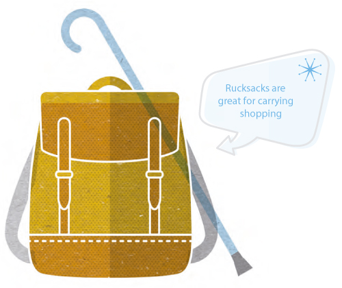

“I didn’t really like the idea
of a walking stick, so my son
bought me a top-of-the-range
mountaineering pole, which we’ve
adjusted to the right length. It
started as a bit of a joke but I wouldn’t be without it now.”
Walking aids
Don’t be embarrassed to use a
walking aid if it helps you stay
steady. It’s important a stick is
the right length: level with your
wrist crease when your arm is
down by your side. It should also
have a rubber end (‘ferrule’) to
stop it slipping; replace worn-out
ones promptly. If a stick is no
longer quite enough, talk to your
physiotherapist about getting
a walking frame or rollator
(wheeled frame).
